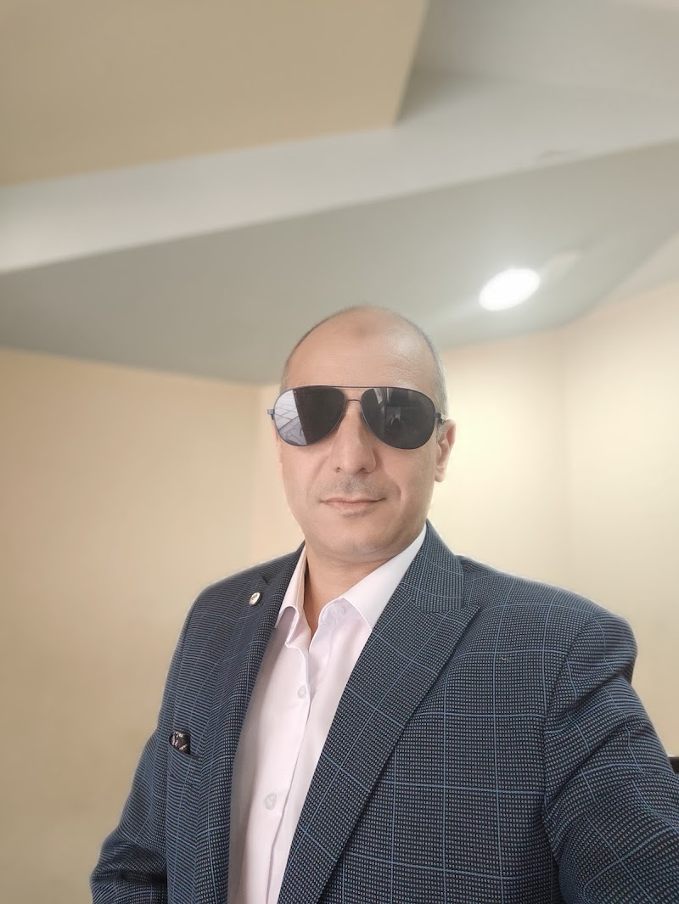

Mohamed Mahfouz AbdelHady

Information Technolgy Manager
+201277771300
Education
B.SC in Commerce in Accounting, Alexandria University August 2003
Languages
Mother Language : Arabic , Degree : Excellent
Second Language : English , Degree : Good
Additional Courses
- Information Technology Manager Latt Trading And Shipping 2009- current
- MS office 2003 Access, Word, PowerPoint, Excel, Outlook, FrontPage
- Building networks
- Website design and development
- Macromedia Dreamweaver
- SQL server 2000 , 2005 ,2008 (Certified [Querying , Programming , Administration])
- Visual Basic 2008 , 2010
- Crystal report 11 (Business Objects)
- Asp.net programming By Visual Basic 2008 and Iron speed
- CCNA
- ISO internal auditor for I.T documents
- MCSE 70-270
- MCITP
Experience:
I.T Manager
I have established the I.T Department and I was the one man show who make everything In I.T Department and I have Made the following Projects In Order To Establish I.T Department
- Create needed server (Domain Server , Mail Server , SQL Server , Antivirus administration server , web server )
- Consulted E.R.P system (Microsoft Dynamics GP) for company use .
- Separated apps servers from database servers (Application server non GP – GP Srever)
- Upgraded company connection from DSL to Leased Line and connected all company branches in 5 cities (Alexandria , Cairo , portsaid , Damietta , Swiss ) with MPLS connections .
- Created terminal server to provide fast access to company software using terminal remote desktop
- Upgraded network components using Cisco routers and switches
- Devolved new telephony system using Cisco Ip Phones between employees in all branches and H.Q
- All servers Deployment & maintenance Domain Server , Mail Server , SQL Server , Antivirus administration server , web server , terminal server , GP server )
- Managing Network (internally and between branches)
- Managing Routers (CISCO) and VOIP( Voice Over Ip System)
- All software & Hardware Issues
- Planning all needed purchase
- Provide help desk tasks for all users in H.Q and all branches remotely and physically .
Software Section ERP Project senior
Dyetex Co., August 2007 – November 2009
Duties include maintenance and backup of the ERP Database, business portal Database and Files, Sales system, Tasks system, Help Desk and HR systems, Controlling & Solving any Problems may happened in data entry in all ERP sections , designing & creating all crystal reports for ERP system , handle any new needed tasks for the ERP management , Implement any needed module , made a gap analysis for the system , Creating side systems (Parallel Systems) to help in the procedure doesn't supported by ERP .
Software Section (Section Head) of IT Management
Dyetex Co., December 2006 – August 2007
Duties include maintenance and backup of the ERP Database, business portal, sales system, tasks system, help desk and HR systems. As well as maintenance for all server systems and clients
IT Professional
Dyetex Co., August 2003 - December 2006
uties include creating access database, hardware maintenance, network administration, websites designs, building networks, building IP cameras networks, and E-mail and server maintenance responsibilities.
Accountant
International Cardiac Center, September 2002 - August 2003
Duties include recording purchase cycle, creating and programming access database for purchases, creating a detailed monthly purchase report from medicine companies, creating a complete report about annual and monthly credits
Reception Department Responsible
International Cardiac Center, August 2001 - Sept 2002
Duties include generating operation and Angeo reports, admitting patients. During my employment, I developed a reception program database
Systems Developed:
Programs Created By Access :
- Reception System: A system developed for International Cardiac Center to follow up all patients’ entry, leave, schedule, and external clinics.
- Quality Control System: A System has been developed or International Cardiac Center to follow up quality control operations by responsible doctors to insure the quality of service.
- Purchase Cycle System: A system developed for International Cardiac Center to monitor their purchasing Cycle (Medical purchasing, general purchasing). The system generates full detailed monthly costs and Items Quantities report.
- Diet System: A system developed for Dr. Ehab Abo El Naga clinic For “Diet and Body Care” to monitor patient status, weight rates, and diet system.
Programs Created By SQL and ASPX (Web Based Applications-GP SIDE APPS):
Note: These Programs Are (ERP Side Programs) created to help to make tasks and procedures that ERP system doesn't support
- Item Balancing System :Company has 8 factories and one central management and we wanted to enter the balance for every item without stock counting , so I devolved this system which let every factory put his balance for every item after all factories finish any item it appears to the responsible to add the balance in the ERP.
- Chemicals System : Dye House production unit is a patch and ERP system production unit is manufacturing order and the Dye House enter all material for the patch and contains more than one manufacturing order so it's calculate the material consumption for every manufacturing order to enter into the ERP system in details.
- ERP Ticket System :Delaying data entry in any stage effect all incoming stages so I have made that system which make everyone in the ERP team open a ticket when he finds delay in the data entry in the previous stage , system will send email and SMS automatically to the required person to solve that delay .
Programs Created By SQL and ASPX (Web Based Applications):
- Sales System: A System developed for Dyetex Co. to follow up all sales Orders. Confirmation steps are required with the authorization of the responsible person. The system kept in mind security and data integrity by having role access based on responsibilities.
- Help Desk System: A system developed for Dyetex Co. to generate maintenance & software request tickets for IT department. It is used for problem logging and monitoring logs into the system and start a ticket For IT team. An email and SMS gets generated for the responsible IT personnel to resolve the Problem. The System also helps with ticket tracking and maintenance time.
- Purchase Order System: This system has been made For Dyetex Co. to follow up purchase orders and to insure data quality of the purchase system so it also has save a confirmation step in every step by responsible person from purchase department to financial department to internal audit department.
- Tasks System: This system has been made For Dyetex Co for creating & sending tasks to other employees and to receive tasks from the others. It is similar to an online calendar that sends automated reminders by mail to the tasks responsible and count down estimated time for every task. The system uses high performance security so every user can see his tasks only this system raised the work performance In Dyetex To 20%.
- Medical ERP System: This system has been made for Delta Vet Co. to follow up inventory transactions, billing status for supplier and customers, stock Follow up & balance .
- Global Co Web Site: system has been made for Global for Landscaping This is a web site contains web based application for showing the customers designs and company information so they can control proposal for the customers (you can make more than one option for the customer and the customer login to the website to choose from the options he have), A large database contains all project made by the company they you can add a project status for every customer, web site will have a professional looking by animated flash templates.
- Reception System : A new Update for International Cardiac Center to follow up all patients’ entry, leave, schedule, and external clinics.
- DELTAVET Trading system: System has been made for DELTAVET Veterinary medicines Trading for handling all procedure in the company (from making LC to selling to the local customers ) this system have GL core any operation on the system generates transaction in the GL
- EMC ID Printing Database : System has been made for EMC sewing production company to print the ID cards directly from the database